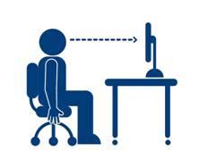

Project 1: Workstation Routines and Management
Workstation Ergonomics
Information processing is enjoyable for many people. Creating new documents, organizing data, designing graphics, solving problems, and working faster can be fun and productive. However, like many other physical and mental activities, working with computers can also be harmful if you don't follow good routines and practices that protect both your health and your equipment.
People have physical, mental, and social needs at work, at school, as well as in their personal lives. Ergonomics is the study of the impact that work and workspaces have on a person's needs and capabilities. The term evolved from the Greek words ergo (meaning “work”) and nomos (meaning “laws of”). There are now professions that design jobs, worksites, learning stations, furniture, and equipment to better suit people's requirements. These professions include occupational health nurses, doctors, physiotherapists, home and office designers, health and safety coordinators, and chiropractors. However, it is up to each individual to take the time to modify and create the best workstations possible.
Repetitive Strain Injury—What Is It?
Our bones and muscles make up our musculoskeletal system. This system allows us to perform activities such as walking, dancing, and swimming—plus everything else that requires movement of the body. As strong as this system might be, overuse of the muscles through repeated movements can put stress on your body, causing a Repetitive Strain Injury (RSI). Other names for RSI include Cumulative Trauma Disorder and Repetitive Motion Injury.
Unfortunately, many office jobs require that we perform repetitive motions to fulfill our duties. For this reason, RSIs are the most common type of injury found in the office. Tendons are common sites of RSI pain and discomfort, but workers may also experience pain in other areas of the body depending on the tasks performed.
Symptoms of RSIs
The first signs of an RSI may be subtle and mild, and the symptoms may appear long after performing the activity. For these reasons, people often ignore the slight aches and pains, but eventually these slight aches and pains can become serious problems down the road if ignored.
Symptoms may include
- dull aching
- loss of sensation (numbness), especially at night
- aches/pains, which may be worse at night
- tingling and burning sensations
- swelling around the wrist/hand
- dry, shiny palm
- ‘pins and needles’ discomfort
- clumsiness (loss of ability to grasp items, impaired thumb and finger dexterity)
- muscle weakness and fatigue
- muscle spasm
- joint restriction/loss of movement
- a ‘crackling’ feeling when swollen tendons are pressed tightly
- a cyst-like swelling or node, known as a ganglion, near a tendon or joint
Although ergonomic principles can help us ward off injury, we may be uninspired to implement them in our everyday habits until our muscles and joints really start to hurt. Acknowledge the warning signs as early as possible and do something about it.
Making Your Workstation Work for You
We are all different. Some people have long arms, others have short torsos, others have long legs—our differences are endless, yet many of our workstations look exactly alike. If we spend several hours a day at our workstations, why not make them fit us?
Your Chair
Since most office work is done sitting at a desk, it is important to adjust our chairs to make them as comfortable as possible.
How do I make my chair fit me?
- Chair height. Adjust the height of your chair so your thighs are horizontal and your knees are at right angles when you are seated. (Or stand in front of the chair and adjust the height so the highest point of the seat is just below your kneecap).
- Seat depth. The space between the front edge of the seat and the back of your knee should be the span of two to three fingers. This will minimize pressure on the underside of your leg.
- Back support. Adjust the lumbar support so it rests in the small of your back.
- Armrests. While seated, bend your elbows to 90 degrees and relax the shoulders. If your armrests do not allow for this position, do not use them while keying or using the mouse. If armrests are too high or too low, have them removed or get a new chair without armrests.
When you’re sitting at your desk, consider these points:
THINK REST BREAKS.
Remember that the body wasn’t designed to sit in a chair for eight hours a day. Avoid sitting for long periods of time. Try to alternate between sitting, standing, and walking while you work, or simply get up and stretch. Aim to move your back, neck, and shoulders at least every 10 minutes, or try some of the office exercises included.
THINK POSTURE.
Keep your feet flat on the floor (using a footrest, if necessary), and lean into the backrest at all times. Keep your back in good alignment and your chin tucked in. This position should feel comfortable and natural.
Your Work Surface
Imagine having the right chair perfectly adjusted to your height, only to have the desk too tall for you. Having these two elements mismatched makes for an ineffective workstation and poor ergonomic design. Generally, the work surface should be about the height of the elbows when the arms are hanging straight down while seated. If possible, adjust the height of your desk or replace it with one that is suitable for your height.

When customizing your work surface,
THINK CONVENIENCE.
Overreaching above or below the shoulder level can lead to aches and pains. Minimize the risk of injury by having the items you frequently use close at hand. That may mean moving the telephone closer to you or placing frequently used binders on your desk rather than on an overhead shelf.
THINK TIDY.
Your work surface should be free of clutter. Remove unnecessary files and office supplies and have only what you need. Likewise, your legs should be allowed to move freely underneath the desk. Gym bags, trash cans, and boxes have no place under your desk.
Your Computer
Although you’ve adjusted your desk and chair to fit you, you’re not quite finished adjusting your workstation. When positioning your computer’s monitor, keyboard, and mouse, location is everything.
Where do I place my monitor?
- Position the monitor directly in front of you when your head is in neutral position and your eyes are looking forward.
- Adjust the screen height. Monitors should be at eye level or just slightly below eye level.
- Place your monitor 18” to 30” from your eyes, or use the arm’s length rule: your monitor should be just beyond your reach if you extend your arm directly in front of you. If the font is too small, consider enlarging the font size. You should also consider adjusting your monitor brightness and contrast for better viewing.
Here are a few other points you may want to keep in mind about your monitor:
GIVE YOUR EYES A BREAK.
Looking at a computer screen for extended periods of time can cause eyestrain. For a few seconds every hour, focus on something farther away (e.g., a clock 20 ft. away).
Tilt your monitor down if glare is noted on the screen. If you find yourself tilting your head up to see the screen because of bifocal or trifocal glasses (even after setting the monitor height), you may want to consider computer-specific glasses. Eyestrain can also be caused by uncorrected vision. Be sure to have your eyes regularly checked by a doctor.
Where do I place my mouse and keyboard?
- Keyboard. Position your keyboard so your wrists are straight when elbows are 90 degrees. Adjust your chair height or your keyboard platform to do this.
- Mouse. Position the mouse at the same height as the keyboard. Keep it within easy reach.
When using your keyboard or mouse,
THINK RELAXED.
Holding a mouse and typing on a keyboard shouldn’t take too much effort. A light grip on the mouse and a light key stroke will keep wrist pain to a minimum.
THINK STRAIGHT.
Try to keep the wrist relaxed and straight. Use the wrist/palm support for micro-breaks only; resting your hands or wrists on the support during keying and mouse usage can bend the wrist. Also, keep your elbows as close to the body as possible and move the mouse with the whole arm, initiating movement from the shoulder.
It's all in the keys! When possible, use the keyboard instead of the mouse to perform computer commands. Learn the shortcuts for your operating system so you minimize wrist strain…and boost productivity.
Think Activity
Office Exercises
Not only do proper diet and regular exercise help strengthen our bodies and contribute to mental alertness, they also help our bodies spring back from injury much faster.
Done frequently and properly, the following exercises can help relieve joint and muscle tension and offset injury.
A few things to remember about doing exercises:
- If you are under medical treatment, please contact your physician before doing any of the following suggested exercises.
- Perform all exercises within your comfort zone, and breathe naturally.
- Stretches should be done slowly and smoothly. Do not bounce or strain. If you feel discomfort, STOP.
Wrist/Forearm Stretches
|
 |
|
 |
|
 |
Shoulder/Arm Stretch
|
 |
Shoulder Shrug
|
 |
Executive Stretch
|
 |
Upper Back Stretch
|
 |
Neck Stretch
|
Palming Your Eyes
|
 |
You are solely responsible for your body—it’s yours to listen to, yours to keep safe, and yours to keep active. We hope that you will use the tips here to help you work smarter and safer, but more importantly, we hope it has inspired you to take your body’s well-being into your own hands.
It’s your body—take care of it!
From “Office Ergonomics” © 2007 by the Workers’ Compensation Board–Alberta. All rights reserved. Reproduced with permission.